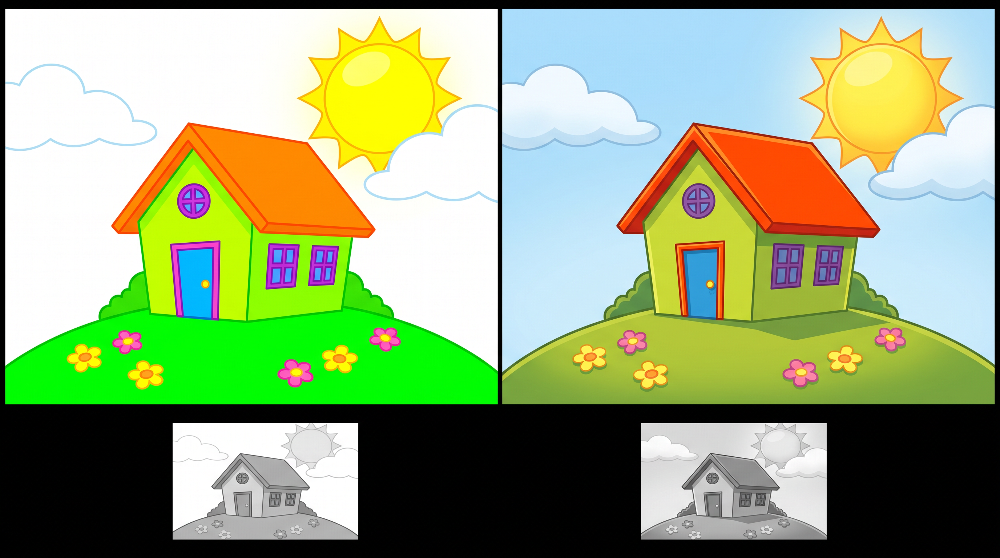
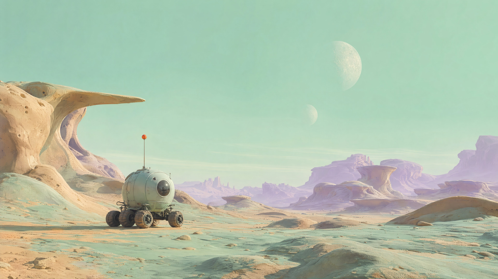
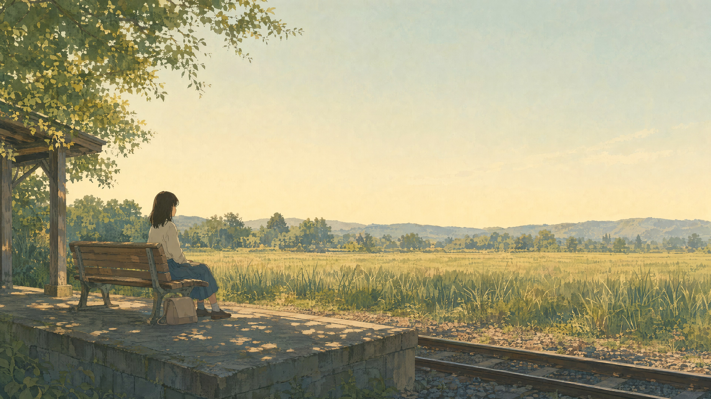
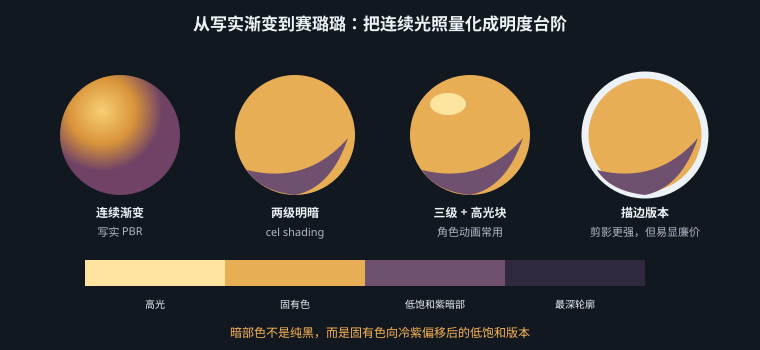

高饱和不等于廉价——廉价感有明确的技术成因，也有明确的解法
先把这一章要解决的问题说清楚。很多人不敢做明亮高饱和的风格，理由是"容易显廉价"。但"廉价"不是玄学，它有一个可以被指出来的成因：
廉价感来自"所有颜色都同样饱和、同样亮"。
为什么这会廉价？因为视觉系统靠差异获取信息。当画面里每一块颜色都在喊"看我"，就等于没有任何一块在喊——注意力无处落脚，大脑被迫在同一优先级的十几个色块之间反复跳视，产生的主观感受就是"吵""俗""塑料味"。这和满屏都是加粗大字的排版看起来很廉价，是同一个机制：强调用得太多，等于取消了强调。
反过来看那些被公认"贵"的高饱和作品——皮克斯的场景、《塞尔达传说：旷野之息》的原野、Hilma af Klint 的画——它们的饱和度峰值一点都不低，但高饱和只出现在很小的面积上，其余部分是大面积的中低饱和色域在托着。饱和度在这里是稀缺资源，而不是默认状态。
vibrant colors、colorful、saturated 这三个词单独出现时，模型会把它理解成"整张图都加饱和"——这正是廉价感的定义。
正确的写法永远是指定主色域 + 指定点缀色 + 指定点缀色出现的位置：
a muted sage-green and warm sand palette, with a single high-chroma tangerine accent on the character's scarf。
对比一下信息量：前者给了 0 个决策，后者给了 4 个。
这条来自室内设计与平面设计的老规矩，在画面配色上同样成立：主色约 60% 面积（通常是中低饱和的环境色）、辅色约 30%（与主色形成明度或色相区分）、点缀色约 10% 甚至更少（最高饱和度，落在最重要的地方）。
它有效的原因是它强制建立了层级。60% 的那块定调，30% 的那块提供结构，10% 的那块承担指向——在游戏里，这 10% 往往就是可交互物、任务目标、玩家角色。色彩纪律和关卡引导在这里是同一件事。
把画面的色相控制在 3–5 个族内（比如"蓝绿 + 沙黄 + 橘红"三族），其余的变化全部靠同一色相内的明度与饱和度变化去做。色相越少，画面越像一个整体；色相越多，越容易散。
这也是为什么"配色方案"（互补色、分裂互补、三角配色）这些老工具至今有效——它们本质上都是限制色相数量的策略，而不是"这几个颜色天生好看"。
这是本章最重要的一条，也是它和上一章暗黑系共享的内核。当你想让某个东西"跳出来"时，有两个选择：把它调得更艳，或者把它调得更亮/更暗。前者在明亮系里几乎总是错的——因为周围已经很艳了，再艳就是加入噪声；而明度差是稀缺的，一块中明度环境里的高明度物体会立刻被看见。
检验方式和上一章一样：转成灰度看。如果灰度版本里画面糊成一片同样的中灰，说明你的层次全押在饱和度上——彩色时勉强能看，一旦被压缩、被投影、被色弱观众看到，就全部塌掉。
| 症状 | 成因 | 修法（提示词） |
|---|---|---|
| 画面吵，看不出主体 | 饱和度全域拉满，无层级 | 指定 60-30-10：dominant desaturated palette with one small high-chroma accent |
| 颜色多但不成体系 | 色相族超过 5 个 | limited palette of three hues: [A], [B], [C] |
| 灰度版糊成一团 | 明度层次缺失 | clear value separation: light sky, mid-tone ground, dark foreground silhouette |
| 塑料玩具味 | 所有材质同粗糙度 + 无环境色影响 | 给材质分档（第 6 章）+ colored bounce light from the ground |

科幻的默认视觉印象是暗的——赛博朋克的雨夜、太空的虚无、《异形》的工业幽闭。但科幻还有一条完全不同的支脉：60 年代太空时代的乐观主义。它的视觉源头很具体：Syd Mead 的概念图（明亮的天空、干净的巨型结构、饱和的点缀色）、Verner Panton 的室内设计、以及《杰森一家》式的原子时代未来主义（Atompunk / Googie 建筑）。这条支脉在游戏里对应的是《无人深空》《星之卡比》《Astro Bot》这类明亮太空。
a small rounded exploration rover crossing a pastel alien plateau, two moons low in a pale mint-green sky, smooth eroded rock formations with continuous curved surfaces and no sharp edges, high open sky as a huge soft light source, 6000K, gentle top-down wrap, plus a warm 4500K low sun from camera left casting long soft-edged shadows, exaggerated atmospheric perspective: distant ridges fading to high-value lilac at low saturation, foreground keeping full chroma, limited palette of three hues — mint green, sand ochre, lilac — with a single high-chroma tangerine accent on the rover's antenna, matte chalky rock, semi-gloss painted metal on the rover, in the manner of Syd Mead's optimistic space-age concept art, 35mm, f/8, low horizon line at the lower third, environment concept art, horizontal
模型：MJ v8.1 · 画幅 16:9 · --stylize 300

| 段落 | 在做什么决定 |
|---|---|
high open sky as a huge soft light source | 把天空写成光源而不是背景——这是户外光照的核心，下一节会展开 |
distant ridges fading to high-value lilac at low saturation | 大气透视的三个正确参数：明度升高、饱和度降低、色相偏冷。三个都要写，只写"变淡"模型会理解成"变模糊" |
limited palette of three hues | 规矩二，直接点名三个色相 |
a single high-chroma tangerine accent | 规矩一的 10%，且落在功能性部件上（天线 = 玩家该注意的地方） |
matte chalky rock vs semi-gloss painted metal | 粗糙度分档（第 6 章），这是"不塑料"的关键 |
建议色板：#B8E6D0 薄荷天 / #D9C08A 沙赭 / #C4B3DC 远景丁香 / #F2762E 橘色点缀（仅约 3% 面积）/ #3B3A4A 最暗值锚点
"通透"是这一路风格被形容得最多的词，也是最难落地的词。它不是玄学，它有三个明确的技术来源，分别对应画面里的三件事。
晴天户外有两个光源，这一点被极大低估了：太阳（角直径约 0.53°，是一个极小的点光源，因此阴影边缘锐利）和整片天空（半球形的巨大面光源，因此阴影内部被柔和地填充）。
这解释了为什么真实的晴天照片既有硬边阴影、阴影里又不是死黑——阴影区没有太阳直射，但仍然被整片蓝天照亮。所以晴天的阴影是蓝色的（被天空照亮），这是印象派最重要的一个发现，也是提示词里最该写的一句话。阴天则相反：太阳被云层散射成一个覆盖全天的面光源，于是阴影几乎消失，只剩极软的过渡。
direct sun as a small hard source from camera right at 5500K, the entire sky acting as a large soft fill, tinting the shadows blue at 9000K, crisp shadow edges with soft blue interiors
"通透"的第二个来源是极亮区域向周围溢出的光晕。它的物理成因是镜头内部的散射与衍射，以及大气中水汽与颗粒对强光的散射。海边尤其明显——水面反射的太阳、湿润的空气、盐雾，共同把高光"化开"。
但这里有一条纪律：bloom 必须来自画面里真实存在的极亮源（太阳、水面反光、白墙）。到处都在发光的图不是通透，是雾里看花。写法上要指定溢出的来源：bloom spilling from the specular glints on the water surface，而不是笼统的 glowing, dreamy。
这是"通透感"最核心也最容易被忽略的一条：受光面暖、背光面冷。成因就是来源一——直射阳光是暖的（5500K，且经过大气后在低角度时更暖），而填充阴影的天光是冷的（阴天穹顶可高达 9000–12000K）。一个物体的亮部与暗部属于两个不同色温的光源，这是自然户外光的本质特征。
相反，如果你把亮部和暗部画成同一个颜色的深浅变化（"加黑""加白"），画面会立刻变得沉闷、像室内、像塑料。"通透"在很大程度上就是这条冷暖分离被正确执行的结果。
初学者把阴影理解成"没有光的地方"，所以画成主色变暗。专业做法是把阴影理解成"只被次光源照亮的地方"——它有自己的颜色、自己的色温、自己的方向。
这条思路直接改变提示词的写法：不要写 with shadows，要写 shadows lit only by the blue sky at 9000K。前者只是描述明暗，后者是在下达一条光照配置。
a girl in a white linen shirt wading in shallow turquoise water, a wide empty beach and low dunes behind her, direct afternoon sun as a small hard source from camera right at 5500K, crisp shadow edges on the sand, the whole sky acting as a large soft fill tinting every shadow blue at 9000K, clear warm-lit / cool-shadow separation, bloom spilling from the specular glints on the water surface, bright caustic patterns on the sandy bottom in the shallows, wet sand at grazing angle turning mirror-like and reflecting the sky, matte sun-bleached linen, soft skin with visible warm subsurface at the ears, palette limited to turquoise, warm sand and white, with a single coral accent, 28mm, f/5.6, eye level, subject at the right third, generous negative space above the horizon for a title, key art, horizontal
模型：Nano Banana Pro · 画幅 16:9 · 无负面词
三条技术来源在这条提示词里各占一段：天空作为光源写在第 3–5 行，并且明确给出了两个色温 5500K / 9000K；高光溢出写在第 6 行，且指明来源是水面反光；冷暖分离由 clear warm-lit / cool-shadow separation 一句直接钉死。此外第 7–8 行是把第 6 章的知识挂上来：焦散（浅水底的网纹）和菲涅尔（湿沙在掠射角变镜面）——这两个细节是"海边真实感"的最大贡献者，且几乎所有人都会漏。最后两行是第 1 章第 3 层：这是 KV，所以要留标题位。
建议色板：#5FC9C3 浅滩绿松 / #2E8B96 深水 / #E8D5B0 暖沙 / #FFFDF7 高光白 / #FF6B5A 珊瑚点缀 / 阴影统一叠加 #7FA8D9 天光蓝
模型的默认倾向是"明亮 = 到处都亮"，结果是一张没有方向光的平光图——所有东西都被均匀照亮，形体感消失，看起来像贴纸拼贴。
对策是强制写出硬阴影的存在与方向：strong directional sunlight casting long hard-edged cast shadows across the ground toward the lower left。注意要写"投影落在地上、朝向哪里"——投影（cast shadow）是把物体钉在地面上的唯一手段，缺了它一切都会"漂"。
治愈系（日语"癒し系"，iyashikei）作为一个可辨识的类型来自日本动画与漫画传统——《摇曳露营△》《夏目友人帐》《魔女宅急便》里的日常段落。它常被当成"画得柔和一点"，但它其实有相当明确的构造逻辑，而且这套逻辑是关于降低观众的警觉水平的。
治愈系的留白有一个具体做法：把画面里 30–50% 的面积交给低信息量区域（天空、水面、榻榻米、一面墙），并且让这些区域有极其微弱的层次（渐变、纹理、一点点噪点），而不是纯色平涂。
"有微弱层次的空"和"纯色的空"给人的感受完全不同：后者像未完成，前者像宁静。提示词里的写法是 large areas of quiet low-detail space with subtle tonal gradation。
宫崎骏作品里的自然之所以让人放松，有一个常被忽略的技术原因：它同时具备极高的细节密度和极低的对比度。一片草地上画了几百株可辨认的草，但它们的明度差异极小，所以细节不产生视觉噪声，只产生"这个世界是丰盈的"这个印象。
提示词里要把这两件事分开写，否则模型会用"高细节"顺带给你"高对比"：
densely rendered individual grass blades and leaves, but held within a very narrow value range so the detail never reads as noise
a small rural train platform in late afternoon, a girl sitting on a bench with her bag beside her, looking out at the fields, no other people, low warm sun at 4600K from behind the camera-left treeline, soft diffused light through leaves, dappled light patches on the platform, low overall contrast, most values held in the upper mid range, no deep blacks and no blown highlights, warm ambient bounce from the wooden bench filling the shadows, densely rendered individual grass blades in the field beyond, held within a narrow value range so the detail never reads as noise, large quiet area of pale sky occupying the upper 40 percent with subtle gradation, horizon placed slightly below center, the figure small within the frame, in the style of hand-painted anime background art, gouache-like flat washes with visible soft edges, 50mm, f/4, eye level, horizontal composition
模型：MJ v8.1 · 画幅 16:9 · --stylize 400
三个机制逐条对应：可预测性——光源方向、空间关系、人物动作全部写明确，画面里没有任何需要解读的东西；无威胁构图——horizon slightly below center + the figure small within the frame + 40% 的安静天空；温暖中间调——most values held in the upper mid range, no deep blacks and no blown highlights 是直方图级别的指令，比写十遍 soft 都准。
建议色板：#F5EFD9 天光米白 / #C7D9A8 田野浅绿 / #8FA86B 田野中绿 / #D6B98C 木质暖褐 / #F0C08A 阳光斑 / 最暗值不低于 #5C5847（刻意不给纯黑）

上面三种明亮风格都可能落到卡通渲染上，所以单独讲一节。NPR（non-photorealistic rendering）在游戏里最主流的一支是赛璐璐着色（cel shading / toon shading），它的技术定义很干净：把连续的光照强度量化成 2–3 个离散台阶。
| 要素 | 技术含义 | 提示词写法 |
|---|---|---|
| 平涂 | 同一台阶内颜色完全均匀，无渐变 | flat color fills with no gradients within each shape |
| 两级明暗 | 只有亮部与暗部两个台阶，交界是硬边 | two-tone cel shading, a single hard-edged shadow step |
| 三级（加高光） | 亮部 / 暗部 / 高光块 | three tone steps: base, shadow and a separate flat highlight shape |
| 描边 | 轮廓线，可有可无 | 有：clean uniform-weight outlines；无：no outlines, shapes separated by color and value only |
要描边：角色密度高、屏幕上尺寸小、需要在复杂背景里快速辨识（横版动作、卡牌、MOBA 头像）。描边本质上是强制的图底分离，代价是画面会偏向"平面"和"漫画感"。
不要描边：追求"三维的动画电影感"、镜头会推近、需要材质表现（《原神》与《渔帆暗涌》都是弱描边或选择性描边）。
折中方案是选择性描边：只在角色与背景之间描，角色内部不描。提示词写法：outlines only along the outer silhouette, no interior line work。
另外注意：暗部描边要用暗部固有色的深色版，不要用纯黑——纯黑描边是廉价感的另一个常见来源，因为它在任何色相环境下都显得外来。
full body character sheet of a young courier in a light windbreaker and cargo shorts, standing in a relaxed contrapposto, three-tone cel shading: flat base color, one hard-edged shadow step, and a separate flat highlight shape on the shoulders and hair, key light from upper camera left, the shadow terminator running as a clean hard curve across the torso, shadow color is a desaturated violet version of each base color, never black, outlines only along the outer silhouette, no interior line work, strong readable silhouette with negative space between arms and torso, limited palette: off-white, slate blue, warm grey, with one hot coral accent on the bag strap, plain neutral background, even secondary fill so the design stays legible, orthographic-ish front view, full body in frame, character concept sheet
模型：FLUX.2 · 画幅 2:3 · 无负面词
注意最后三行——这是第 1 章第 3 层的直接执行：角色设定图的用途要求是"看清设计"，所以背景要干净、光要中性、要全身入画。同样一个角色如果是做 KV，这三行会被换成戏剧性光照和留白构图。shadow color is a desaturated violet version of each base color, never black 这一句解决了 NPR 最常见的塑料感来源。

明亮场景进入视频后最容易发生的不是“变暗”，而是每帧都在重新争夺最亮与最艳：角色跑过水面，高光忽然铺满；相机转向天空，自动曝光压低主体；粒子特效一出现，原本用于任务目标的点缀色失去稀缺性。动态明亮系需要同时管理曝光预算、饱和度预算和运动预算，让变化服务于视线，而不是把全片推成闪烁的糖纸。
| 预算 | 固定规则 | 运动中允许变化 | 逐镜检查 |
|---|---|---|---|
| 曝光 | 肤色 / 主体中间调为锚，高光只留给太阳、水闪与技能峰值 | 进入背光时渐变补偿，不逐帧自动重算 | 缩略图与波形图都不能出现整帧呼吸 |
| 饱和度 | 环境中低饱和，功能点缀不超过约 10% | 点缀沿角色或交互路径移动 | 模糊画面后，最高色度仍只落在一个焦点 |
| 运动 | 主体、相机、背景最多两项同时高速 | 高潮短时突破，随后回到安静基线 | 暂停任意帧仍有清楚剪影和明度分组 |
提示词要把“风吹草动”拆成不同频率：云和远海低频缓移，衣摆与草叶中频摆动，水面闪点高频但只在小面积出现。这样画面有生命，却不会把所有纹理同时煮沸。镜间一致性则锁定太阳方位、天空填充、三色色板和角色点缀位置；镜头可变的是动作幅度、景别和亮点出现的时刻。
a six-second bright coastal gameplay shot, the courier running left to right, fixed hard sun from world-right at 5500K and soft blue-sky fill at 9000K, exposure anchored to the courier's upper-mid-value jacket, no automatic pumping, low-frequency cloud drift, medium-frequency scarf and dune-grass motion, small high-frequency water glints confined to the lower right, muted turquoise and warm sand environment; the only high-chroma coral remains on the courier's bag strap throughout the shot; stable silhouette, no global bloom
亮度周期性抽动，先减少大面积高光并声明曝光锚，不要只写 consistent brightness；珊瑚点缀在背景随机复制，说明色彩没有绑定对象，应补“only on”并降低环境色度；为了稳定而把一切变成平光，则是误把连续性当无变化，应保留固定方向的硬投影和有来源的高光。修复时分别冻结光、色、运动三组变量，每轮只放开一组。